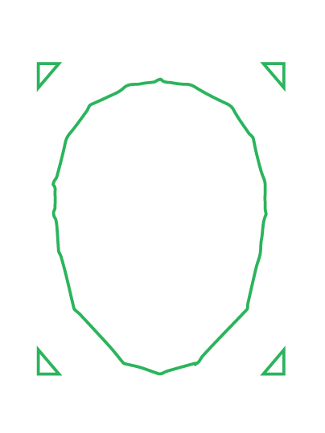

<ion-header [translucent]="true">
  <ion-toolbar>
    <ion-title>examiner</ion-title>
  </ion-toolbar>
</ion-header>

<ion-content [fullscreen]="true">
  <ion-header collapse="condense">
    <ion-toolbar>
      <ion-title size="large">examiner</ion-title>
    </ion-toolbar>
  </ion-header>
  <!-- <ion-icon name="camera"></ion-icon> -->

  <div *ngIf="capturedImage">
    
  </div>

  <div class="mt-6 text-center" *ngIf="!capturedImage">
    <!-- <div class="text-center mt-32" id="container"> -->
      
    <button class="rounded-xl px-9 py-5 bg-[#1BB55C] w-80 text-2xl" (click)="takePicture()">Capture</button>
  </div>
  
  <div class="mt-6 text-center" *ngIf="capturedImage">
    <button class="rounded-xl px-9 py-5 bg-[#1BB55C] w-80 text-2xl" >Examine</button>
  </div>
  
</ion-content>
